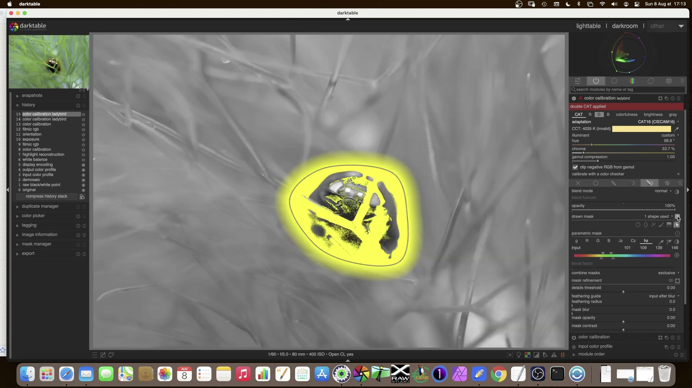
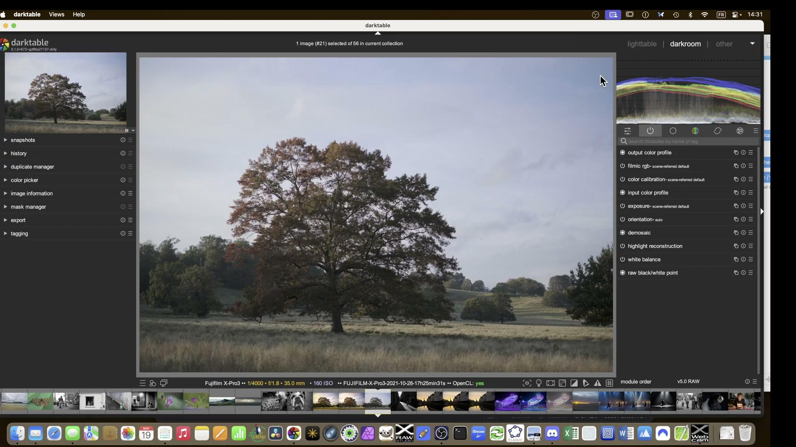
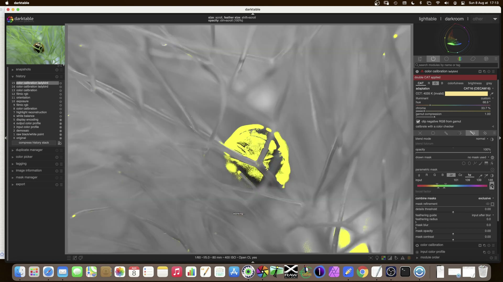
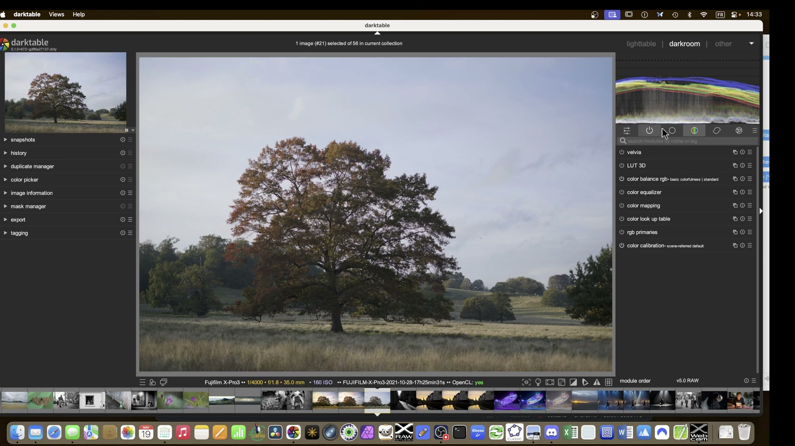
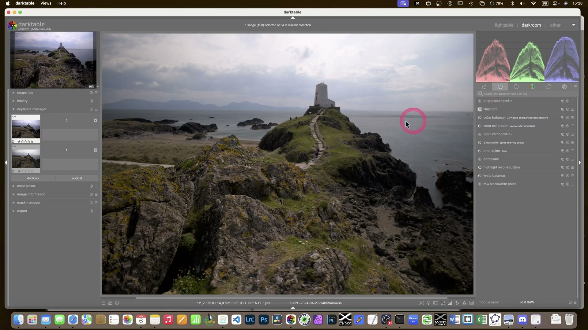

Paesaggio -- Tramonto con albero e maschere avanzate¶
Fonte: Darktable landscape edit with AI -- A Dabble in Photography
Un paesaggio autunnale con un albero centrale e un cielo piatto: l'obiettivo e' enfatizzare i colori caldi dell'albero, recuperare dettagli nel cielo e creare un effetto atmosfera solare.

Contesto¶
Immagine scattata con Fujifilm X-Pro3, 35mm, f/1.8, 1/4000s, ISO 160. Il RAW appare spento e privo di contrasto. Il cielo e' uniformemente grigio e i colori autunnali dell'albero non hanno pop.
Passo 1 -- Correzioni di base¶
Orientation: | Parametro | Valore | |-----------|--------| | Auto | yes |
Allineare l'orizzonte come primo passo, prima di qualsiasi altra correzione.
Sigmoid (tone mapper scelto per questo paesaggio): | Parametro | Valore | |-----------|--------| | Contrast | 1.500 | | Skew | +0.00 | | Color processing | per channel | | Preserve hue | 100.00% | | Target black | 0.0152% | | Target white | 100.00% |
Preserve hue e tramonti
Per i tramonti, valutare di ridurre il parametro preserve hue in Sigmoid/AgX per prevenire la generazione di falsi colori nelle alte luci saturate. In questo caso si mantiene al 100% per la fase iniziale.
Passo 2 -- Strategia di mascheramento: maschera "Tree Highlights"¶
L'approccio chiave: creare una maschera combinata (disegnata + parametrica) in un modulo fittizio di Esposizione per isolare i colori caldi dell'albero.
2a -- Creare il modulo contenitore¶
- Aggiungere un modulo Esposizione
- Rinominarlo: "tree highlights"
- Lasciare i parametri a zero -- serve solo come contenitore per la maschera
Exposure (contenitore maschera): | Parametro | Valore | |-----------|--------| | Mode | manual | | Compensate camera exposure | -1.0 EV | | Exposure | +0.000 EV | | Black level correction | +0.000 |
2b -- Maschera disegnata¶
Disegnare una forma a mano libera intorno alla chioma dell'albero: - Non includere il tronco per mantenere realismo - Non includere i cespugli alla base - Usare 1 shape con feathering iniziale di 4 px
2c -- Maschera parametrica¶
Affinare la selezione con parametri cromatici:
| Parametro | Valore |
|---|---|
| Input | g, R, B (canali colore) |
| Combine masks | Exclusive |
| Input g | 0.12 |
| Input R | 0.25 |
| Input G | 1.0 |
| Input B | 1.0 |
Maschera esclusiva
La combinazione exclusive tra maschera disegnata e parametrica rimuove dalla selezione le aree che soddisfano entrambi i criteri -- utile per escludere il cielo che potrebbe essere catturato dalla maschera disegnata.

Passo 3 -- Applicare la maschera al Color Equalizer¶
Invece di ricreare la maschera, riutilizzarla come raster mask nel Color Equalizer:
| Parametro | Valore | Maschera |
|---|---|---|
| Raster mask | exposure + tree highlights | -- |
| Mask exposure compensation | -- | -- |
| Mask contrast compensation | -- | -- |
Questo e' il vantaggio del workflow a basso livello: la maschera creata in un modulo diventa disponibile per tutti i moduli successivi.
Passo 4 -- Maschera globale per l'albero¶
Creare un secondo gruppo di maschere per l'albero completo:
Exposure (nuova istanza: "tree global"): | Parametro | Valore | |-----------|--------| | Drawn mask | 2 shapes (path + gradient) | | Combine | Intersezione | | Gradient | Diagonale, feathering verso il basso |
La maschera combinata copre tutta la chioma con un gradiente che si attenua verso il basso, lasciando scura la parte bassa dell'albero per un effetto piu' naturale.
Parametric mask per affinare: | Parametro | Valore | |-----------|--------| | Input | Jz (spazio JzCzHz) | | Valori | 155, 170, 251, 277 | | Feathering radius | 170.1 px | | Feathering guide | input after blur | | Mask opacity | -27% | | Mask contrast | -21% |
Feathering elevato per transizioni morbide
Un raggio di sfumatura di 170+ px e' necessario per transizioni invisibili tra area mascherata e non mascherata, specialmente su soggetti organici come alberi e vegetazione.
Passo 5 -- Tone Equalizer con maschera raster¶
Applicare il Tone Equalizer usando la maschera raster globale:
| Parametro | Valore |
|---|---|
| Raster mask | exposure + tree global |
| Mask exposure compensation | -1.93 EV |
| Mask contrast compensation | +0.00 EV |
| Curve smoothing | +0.00 |
Sollevare le ombre dell'albero senza alterare il resto dell'immagine.

Passo 6 -- Maschera per il cielo¶
Creare una nuova istanza di Esposizione chiamata "sky":
| Parametro | Valore |
|---|---|
| Parametric mask input | g (luminanza) |
| Feathering radius | Da affinare (iniziare da 50 px) |
| Boost factor | Variabile |
Duplicare per separare maschera e regolazioni
Duplicare il modulo sky: una istanza contiene solo la maschera raffinata, l'altra contiene le regolazioni di esposizione/colore. Questo permette di affinare la maschera senza alterare i parametri.
Passo 7 -- Effetto sole e atmosfera¶
Per creare un effetto di luce solare che filtra:
- Usare Color Balance RGB con maschera sul cielo
- Aggiungere calore (toni arancio/giallo) nella zona del sole
- Usare Diffuse or Sharpen per effetto di diffusione/foschia
Color Balance RGB (effetto sole): | Parametro | Valore | |-----------|--------| | Master mode | 4 ways | | Highlights hue | Tono caldo (arancio-giallo) | | Highlights chroma | Moderato | | White fulcrum | +0.00 EV |
Passo 8 -- Gestione della foschia¶
Per ridurre la foschia e aumentare la percepita profondita':
Diffuse or Sharpen (de-haze): | Parametro | Valore | |-----------|--------| | Iterations | 21 | | 1st order speed | -20.00% | | 3rd order speed | -20.00% | | 2nd/4th order speed | +10.00% | | 1st/3rd order anisotropy | +200.00% |
De-haze: dosare con attenzione
Valori troppo aggressivi nel de-haze creano un aspetto innaturale. Iniziare con iterazioni basse e aumentare gradualmente.
Passo 9 -- Nitidezza finale¶
Applicare la nitidezza come ultimo passo, solo se necessario:
- Nitidezza globale: leggera, solo per compensare il downsampling
- Nitidezza locale: solo sul soggetto principale (albero) tramite maschera

Riepilogo impostazioni¶
| Modulo | Parametri chiave | Scopo |
|---|---|---|
| Orientation | Auto | Allineare orizzonte |
| Sigmoid | Contrast 1.5, Preserve hue 100% | Tone mapping |
| Exposure (tree highlights) | Contenitore maschera, exposure 0 | Maschera combinata albero |
| Exposure (tree global) | 2 shapes, gradiente diagonale | Maschera globale albero |
| Color Equalizer | Raster mask da tree highlights | Saturazione selettiva |
| Tone Equalizer | Mask exposure -1.93 EV | Contrasto locale albero |
| Exposure (sky) | Maschera parametrica luminanza | Selezione cielo |
| Color Balance RGB | 4 ways, highlights caldo | Effetto sole |
| Diffuse or Sharpen | De-haze, anisotropia +200% | Rimuovere foschia |
| Parametric mask | Input Jz, feathering 170 px | Affinamento bordi |
Principi chiave di questo caso¶
- Maschere come asset riutilizzabili -- la maschera creata in Exposure viene riusata in Color Equalizer e Tone Equalizer
- Maschere combinate -- disegnata + parametrica + gradiente per selezioni precise
- Feathering generoso -- 170+ px per transizioni invisibili su soggetti organici
- Duplicazione moduli -- separare maschera e regolazioni in istanze diverse
- Ordine logico -- correzioni globali prima, maschere locali dopo, nitidezza alla fine
Riferimenti visuali¶

Filmic RGB · frame a 1737s da video YouTubeFonti¶
-
Darktable landscape edit with AI -- A Dabble in Photography ↩